X140–X190¶
Derived Triangle Centers, Isoscelizers & Ajima-Malfatti Points
Complements, anticomplements, and classical centers evaluated on the medial, orthic, tangential, and excentral triangles, together with congruent isoscelizer, equal detour, and Ajima-Malfatti points.
X140–X190 (Derived Triangle Centers, Isoscelizers & Ajima-Malfatti Points) — 16 representative centers (from 51 in collection) constructed on acute reference triangle \((a, b, c) = (5, 6, 7)\) with unit baseline AB = \(1\).¶
Group Preamble — Centers X140-X170 (Centers of central triangles)
Centers in this section, by index:
113- 127, 140- 143: centers of the medial triangle
128- 139: centers of the orthic triangle
144- 153: centers of the anticomplementary triangle
154- 157, 159- 163: centers of the tangential triangle
164- 170: centers of the excentral triangle
X140MIDPOINT OF X3 AND X5
X140 is the midpoint of X3 and X5.
X141COMPLEMENT OF SYMMEDIAN POINT
X141 is the complement of symmedian point.
X142COMPLEMENT OF X9
X142 is the {X2,X7}-harmonic conjugate of X9. For a list of other harmonic conjugates, click Tables at the top of this page.
X143NINE-POINT CENTER OF ORTHIC TRIANGLE
X143 is the QA-P13 center (Nine-point Center of the QA-Diagonal Triangle) of quadrangle ABCX4 (see http://www.chrisvantienhoven.nl/quadrangle-objects/15-mathematics/quadrangle-objects/artikelen-qa/41-qa-p13.html). Also, X143 is the QA-P22 center (Midpoint QA-P1 and QA-P20) of quadrangle ABCX4 (see http://www.chrisvantienhoven.nl/quadrangle-objects/15-mathematics/quadrangle-objects/artikelen-qa/50-qa-p22.html)
X144ANTICOMPLEMENT OF X7
X144 is the anticomplement of X7.
X145ANTICOMPLEMENT OF NAGEL POINT
Let OA be the circle tangent to side BC at its midpoint and to the circumcircle on the same side of BC as A. Define OB, OC cyclically. Then X145 is the trilinear pole of the line of the exsimilicenters (the Monge line) of OA, OB, OC. See the reference at X1001.
X146REFLECTION OF X20 IN X110
X146 is the {X74,X113}-harmonic conjugate of X2. For a list of harmonic conjugates, click Tables at the top of this page.
X147TARRY POINT OF ANTICOMPLEMENTARY TRIANGLE
X147 is the {X98,X114}-harmonic conjugate of X2. For a list of harmonic conjugates, click Tables at the top of this page.
X148STEINER POINT OF ANTICOMPLEMENTARY TRIANGLE
X148 = anticomplement of X99
X149REFLECTION OF X20 IN X104
X149 is the {X11,X100}-harmonic conjugate of X2. For a list of harmonic conjugates, click Tables at the top of this page.
X150REFLECTION OF X20 IN X103
X150 is the reflection of X20 in X103.
X151REFLECTION OF X20 IN X109
X151 is the reflection of X20 in X109.
X152REFLECTION OF X20 IN X101
X152 is the reflection of X20 in X101.
X153REFLECTION OF X20 IN X100
X153 is the reflection of X20 in X100.
X154-CEVA CONJUGATE OF X6
X154 is the {X26,X156}-harmonic conjugate of X155. For a list of harmonic conjugates of X154, click Tables at the top of this page.
X155EIGENCENTER OF ORTHIC TRIANGLE
X155 = X4-of-tangential-triangle
X156-OF-TANGENTIAL-TRIANGLE
X156 is the {X154,X155}-harmonic conjugate of X26. For a list of harmonic conjugates, click Tables at the top of this page.
X157-OF-TANGENTIAL-TRIANGLE
X157 = X6-of-tangential-triangle
X158-CROSS CONJUGATE OF X92
X158 = X107-beth conjugate of X34

X159-OF-TANGENTIAL-TRIANGLE
X159 = X9-of-tangential triangle if ABC is acute
X160-OF-TANGENTIAL-TRIANGLE
X160 = X95-Ceva conjugate of X6
X161-OF-TANGENTIAL-TRIANGLE
X161 = X63-of-tangential triangle if ABC is acute
X162CEVAPOINT OF X108 AND X109
X162 is the cevapoint of X108 and X109.
X163TRILINEAR PRODUCT X6*X110
X163 = barycentric product of circumcircle intercepts of line X1X21
X164INCENTER OF EXCENTRAL TRIANGLE
X164 is the incenter of excentral triangle.
X165CENTROID OF THE EXCENTRAL TRIANGLE
X165 is the {X3,X40}-harmonic conjugate of X1. For a list of harmonic conjugates of X165, click Tables at the top of this page.
X166GERGONNE POINT OF EXCENTRAL TRIANGLE
X166 = X7-of-excentral triangle
X167NAGEL POINT OF EXCENTRAL TRIANGLE
X167 = X8-of-excentral triangle
X168MITTENPUNKT OF EXCENTRAL TRIANGLE
X168 = X9-of-excentral triangle
X169-CEVA CONJUGATE OF X1
X169 = X85-Ceva conjugate of X1
X170-ALEPH CONJUGATE OF X9
X170 = X76-of-excentral triangle
X171{X2, X31}-HARMONIC CONJUGATE OF X238
X171 is the {X2, X31}-harmonic conjugate of X238.
X172TRILINEAR PRODUCT X6*X171
X172 = X101-beth conjugate of X172
X173CONGRUENT ISOSCELIZERS POINT
Let PB on sideline AC and QC be equidistant from A, so that APBQC is an isosceles triangle. The line PBQC is called an isoscelizer. The lines PBQC, PCQA, PAQB concur in X173. (P. Yff, unpublished notes, 1989)
X174YFF CENTER OF CONGRUENCE
In notes dated 1987, Yff raises this question concerning certain triangles lying within ABC: can isoscelizers (defined at X173), PBQC, PCQA, PAQB, be constructed so that, on putting
X175ISOPERIMETRIC POINT
A point X is defined as an isoperimetric point of triangle ABC if |XB| + |XC| + |BC| = |XC| + |XA| + |CA| = |XA| + |XB| + |AB|. Veldkamp established that X = X175, uniquely, for some triangles ABC, but the conditions he gives are not correct. Hajja and Yff proved that the condition tan(A/2) + tan(B/2) + tan(C/2) < 2 is necessary and sufficient. See also X176 and the 1st and 2nd Eppstein points, X481, X482.
X176EQUAL DETOUR POINT
A point X is defined as a point of equal detour of triangle ABC if |XB| + |XC| - |BC| = |XC| + |XA| - |CA| = |XA| + |XB| - |AB|. Veldkamp established that X = X176 for some triangles ABC, but the conditions he gives are not correct. Hajja and Yff proved that the condition tan(A/2) + tan(B/2) + tan(C/2) < 2 is necessary and sufficient for the existence of exactly two points of equal detour and that the condition tan(A/2) + tan(B/2) + tan(C/2) = 2 is necessary and sufficient for the existence of exactly one point of equal detour. Yff found that X176 is also is the center of the inner Soddy circle. See also X175 and the 1st and 2nd Eppstein points, X481, X482.
X1771st MID-ARC POINT
X177 = crosspoint of X7 and X174
X1782nd MID-ARC POINT
X178 = complement of X188
X1791st AJIMA-MALFATTI POINT
The famous Malfatti Problem is to construct three circles O(A), O(B), O(C) inside ABC such that each is externally tangent to the other two, O(A) is tangent to lines AB and AC, O(B) is tangent to BC and BA, and O(C) is tangent to CA and CB. Let A' = O(B)∩O(C), B' = O(C)∩O(A), C' = O(A)∩O(B). The lines AA',BB',CC' concur in X179. Trilinears are found in Yff’s unpublished notes. See also the Yff-Malfatti Point, X400, having trilinears \(\csc^{4}(A/4)\) : \(\csc^{4}(B/4)\) : \(\csc^{4}(C/4)\), and the references for historical notes.
X1802nd AJIMA-MALFATTI POINT
Let A″,B″,C″ be the excenters of ABC, and let A',B',C' be as in the construction of X179. The lines A'A″,B'B″,B'B″ concur in X180. Trilinears are found in Yff’s unpublished notes. See X179.
X181APOLLONIUS POINT
Let O(A),O(B),O(C) be the excircles. Apollonius’s Problem includes the construction of the circle O tangent to the three excircles and encompassing them. (The circle is called the Apollonius circle.) Let A' = O∩O(A), B'=O∩O(B), C'=O∩O(C). The lines AA',BB',CC' concur in X181. Yff derived trilinears in 1992.
X182MIDPOINT OF BROCARD DIAMETER
X182 is the midpoint of the Brocard diameter (the segment X3-to-X6); also the center of the 1st Lemoine circle, and the center of the Brocard circle.
X183TRILINEAR PRODUCT X75X_182
X183 = X6-of-circummedial-triangle
X184INVERSE OF X125 IN THE BROCARD CIRCLE
X184 is the homothetic center of triangles ABC and A'B'C', the latter defined as follows: let B1 and C1 be the points where the perpendicular bisector BC meets sidelines CA and AB, and cyclically define C2, A2; A3, B3. Then A'B'C' is formed by the perpendicular bisectors of segments B1C1, C2A2, A3B3. (Fred Lang, Hyacinthos #1190)
X185NAGEL POINT OF THE ORTHIC TRIANGLE
Alexei Myakishev has noted that X185 is the Nagel point of the orthic triangle only is ABC is an acute triangle.
X186INVERSE-IN-CIRCUMCIRCLE OF X4
X186 = circumcircle-inverse of X4
X187INVERSE-IN-CIRCUMCIRCLE OF X6 (SCHOUTE CENTER)
Let L denote the line having trilinears of X187 as coefficients. Then L is the line passing through X2 perpendicular to the Euler line.
X1882nd MID-ARC POINT OF ANTICOMPLEMENTARY TRIANGLE
X188 = anticomplement of X178
X189CYCLOCEVIAN CONJUGATE OF X8
X189 is the perspector of triangle ABC and the pedal triangle of X84.
X190YFF PARABOLIC POINT
In unpublished notes, Yff has studied the parabola tangent to sidelines BC, CA, AB and having focus X101. If A',B',C' are the respective points of tangency, then the lines AA', BB', CC' concur in X190.